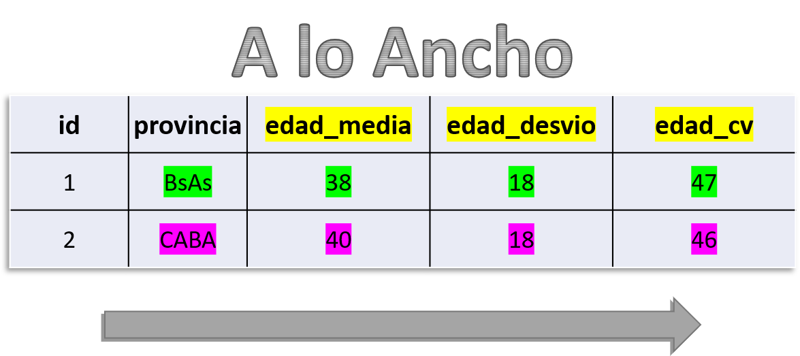
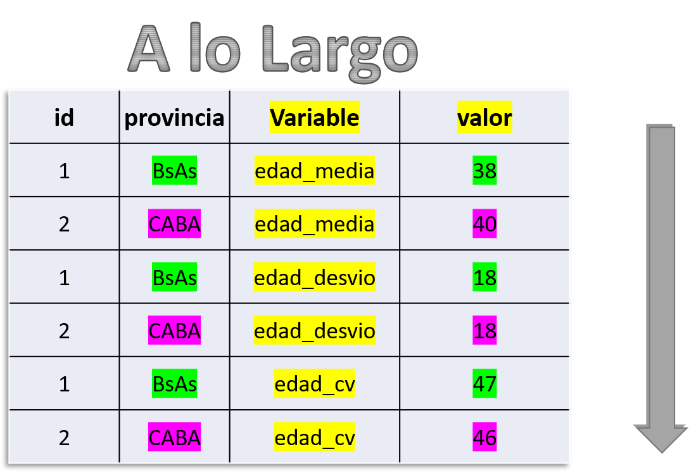

Optimización de Tablas y Transformaciones Avanzadas
Tratamiento de datos II
Bienvenidos y bienvenidas a Estación R
Hoja de Ruta - Módulo I
📌 Optimización de Tablas y Transformaciones Avanzadas
📦 Paquete {dplyr}
🔧 distinct()
🔧 pull()
🔧 relocate()
🔧 coalesce()
🔧 na_if()
🔧 slice()📦 Paquete {tidyr}
🔧 pivot_longer()
🔧 pivot_wider() 📦 Paquete {janitor}
🔧 clean_names() 🔧 tabyll() Configuración para esta clase
✅ Armar un proyeto de trabajo
✅ Crear una carpeta llamada
datos✅ Descargar la base de Ingreso de anual de Personas 2024 - MX y ubicarla en la carpeta
datos✅ Crear un script de trabajo
Configuración para esta clase
- Código para cargar la base directo desde Github, sin tener que descargarla (se necesita conexión a internet)
Procesamiento de datos - Mapa

Procesamiento de datos - La pipa (o tubería)
- EL PIPE
- > Una forma de escribir
Procesamiento de datos - La pipa (o tubería)
Procesamiento de datos - Buenas prácticas
- Diagnosticar
- Procesar
- Chequear
Procesamiento de datos - Buenas prácticas
- Ejemplo: Nombre de columnas
Procesamiento de datos - Buenas prácticas
- Ejemplo: Categorías de una variable
[1] "Guadalajara" "Monterrey" "PUEBLA" "Puebla" "CDMX"
[6] "guadalajara" "Querétaro" "GUADALAJARA" "MONTERREY" "puebla"
[11] "monterrey" Pregunta
🗳 Votar: ¿Qué hace la función str_to_title()?
[1] "Pepe Locura" "Rodobolfo Lanzini" "Lola Lala" - 𝐀 –> Agrega una mayúscula a la primera letra de la primera palabra
- 𝐁 –> Agrega una mayúscula a la primera letra de todas las palabras
- 𝐂 –> Pasa todo a minúscula
Procesamiento de datos
📚 Kit de funciones:
🪛 janitor::clean_names(): Simplifica y estandariza nombres de columnas.
🪛 dplyr::distinct(): Filtra y mantiene solo filas únicas según variables específicas.
🪛 dplyr::pull(): Extrae una columna como vector.
Procesamiento de datos
📚 Kit de funciones:
🪛 dplyr::coalesce(): Ayuda a manejar valores faltantes reemplazándolos con valores específicos.
🪛 dplyr::na_if(): Convierte valores específicos (por ejemplo valores erróneos) a NA.
🪛 dplyr::slice(): Selecciona subconjuntos específicos de filas según su posición.
Procesamiento de datos
🪛 distinct(): Filtra y mantiene solo filas únicas según variables específicas.
### Diagnóstico
# Identifico si existen casos duplicados
df_duplicados <- df_ingresos_trab %>%
get_dupes()
head(df_duplicados, n = 3)# A tibble: 3 × 6
nombre_persona edad_persona ciudad_residencia ingreso_anual nivel_educativo
<chr> <dbl> <chr> <dbl> <chr>
1 Sofía 49 Monterrey 54512 Primario incomple…
2 Sofía 49 Monterrey 54512 Primario incomple…
3 Sofía 49 Monterrey 54512 Primario incomple…
# ℹ 1 more variable: dupe_count <int>Procesamiento de datos
🪛 distinct(): Filtra y mantiene solo filas únicas según variables específicas.
### Procesamiento (elimino duplicados)
df_ingresos_trab <- df_ingresos_trab %>%
distinct()
### Chequeo
df_ingresos_trab %>%
get_dupes()# A tibble: 0 × 6
# ℹ 6 variables: nombre_persona <chr>, edad_persona <dbl>,
# ciudad_residencia <chr>, ingreso_anual <dbl>, nivel_educativo <chr>,
# dupe_count <int>Procesamiento de datos
¿Y si considero un caso “duplicado” sólo por dos de sus variables?
Procesamiento de datos
🪛 pull(): Extrae una columna como vector, facilitando ciertas operaciones.
Procesamiento de datos
🪛 pull(): Extrae una columna como vector, facilitando ciertas operaciones.
Procesamiento de datos
El ingreso máximo de la ciudad de Pueba es de $89.769
Procesamiento de datos
🪛 dplyr::coalesce(): Ayuda a manejar valores faltantes reemplazándolos con valores específicos.
Procesamiento de datos
Procesamiento de datos
🪛 dplyr::na_if(): Convierte valores específicos (por ejemplo valores erróneos) a NA.
–> Útil cuando ciertos códigos o textos (como “NS/NC” o “Sin dato”) significan dato faltante.
na_if()
✅ Ejemplo 1 — Texto “NS/NC” → NA
na_if()
✅ Ejemplo 1 — Texto “NS/NC” → NA
na_if()
✅ Ejemplo 1 — Texto “NS/NC” → NA
na_if()
✅ Ejemplo 1— Texto “NS/NC” y “Sin dato” → NA
📦 La familia de funciones slice()
| Función | ¿Qué hace? |
|---|---|
slice_head() |
Devuelve las primeras x filas del data frame (o de cada grupo si se usa group_by()). |
slice_tail() |
Devuelve las últimas x filas del data frame (o de cada grupo). |
slice_min() |
Devuelve las filas con los valores mínimos de la columna col. |
slice_max() |
Devuelve las filas con los valores máximos de la columna col. |
slice_sample() |
Selecciona x filas de forma aleatoria (útil para crear muestras). |
📦 La familia de funciones slice()
# A tibble: 9 × 5
nombre_persona edad_persona ciudad_residencia ingreso_anual nivel_educativo
<chr> <dbl> <chr> <dbl> <chr>
1 María 32 Guadalajara 0 Universitario inc…
2 Juan 55 Guadalajara 0 Universitario com…
3 Luis 37 Monterrey 39255 Primario completo
4 Sofía 36 Puebla 0 <NA>
5 Pedro 55 Puebla 0 Universitario com…
6 Ana 49 Puebla 0 Primario completo
7 Ana 29 Cdmx 38580 Universitario com…
8 Juan 59 Querétaro 0 Universitario com…
9 Carlos 46 Querétaro 0 Sin dato 📦 La familia de funciones slice()
¿Y qué pasa si usamos los parámetros with_ties = TRUE y n =?
📦 La familia de funciones slice()
¿Y qué pasa si usamos los parámetros with_ties = TRUE y n =?
📦 La familia de funciones slice()
🧠 Extra: ¿cuándo usar slice() y no filter()?
✔️ Cuando se quiere trabajar por posición y no por condición lógica.
✔️ Cuando se necesita una muestra o los valores extremos por grupo.
❌ Si se necesita filtrar por edad, provincia o texto, usar filter().
🔄 De ancho a largo y de largo a ancho
Funciones pivot_longer() y pivot_wider()
¿Qué es pivotear una tabla?
Pivotear significa reorganizar columnas en filas o filas en columnas, sin perder información.
🔁 Es una transformación estructural, no de contenido.
🟦 Formato ancho: muchas columnas → 1 fila por caso
🟥 Formato largo: menos columnas → varias filas por caso
🔄 De ancho a largo y de largo a ancho


pivot_longer() – de ancho a largo
# A tibble: 6 × 5
nombre_persona edad_persona ciudad_residencia ingreso_anual nivel_educativo
<chr> <dbl> <chr> <dbl> <chr>
1 Pedro 51 Guadalajara 38463 Sin dato
2 Pedro 56 Monterrey 66316 Primario incomple…
3 Carlos 49 Monterrey 80761 Universitario com…
4 Sofía 58 Monterrey 75524 Universitario com…
5 Carlos 53 Puebla 70525 Primario completo
6 Luis 29 Monterrey 52095 Primario completo